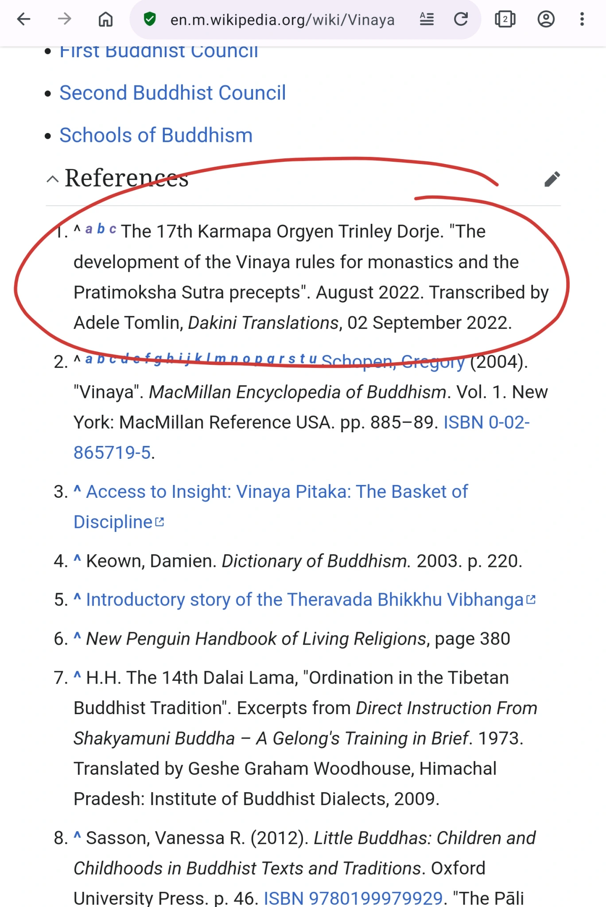
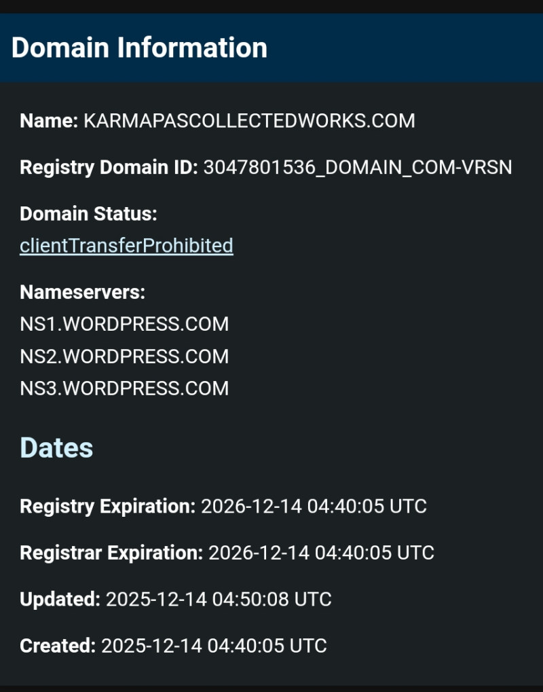

GURU PARASITISM: THE SYNCHRONICITY OF GREMLIN BACKBONE WITH THE SINO-STATE AGENDA
Mechanism Vehicle / Trojan Horse: A textbook example of unauthorized, rogue publishing and lineage hijacking. How gremlin sabotages the Vajrayana lineages via misappropriating the name and teachings of H.H. the 17th Karmapa Ogyen Trinley Dorje, unlawfully posting on its commercialized platform dakinitranslations.com without his written authorization, to deliver unconsented psychological operations through bait-and-switch strategy, forcefeeding trusting spiritual seekers with malteachings injected with fabricated truths, unconsented erotomania and hate schemas, violating the basic tenets of human rights and psychological agency.
The gremlin backbone: Guru-Parasitism
-
The Strategy of Unauthorized Translation
It frequently takes the public oral teachings, Tibetan texts, or video broadcasts of the 17th Karmapa (and previously, masters like Sangye Nyenpa Rinpoche) and translates or transcribes them independently.
The Violation: It does this completely bypassing the official monastic libraries, administrations, and copyright holders. For example, Benchen Monastery Library explicitly issued public notices regarding unauthorized translations of their lama's work.
The Playbook: It ignores these boundaries entirely, claiming that because it is translating "Dharma" or because it claims it received a past oral transmission, it has a unilateral right to publish whatever it wants. -
Lineage Hijacking & The Legitimacy "Hook"
Its massive catalog of Karmapa translations is the ultimate credibility shield for its operation. By continuously publishing translations of the Karmapa's words, it creates an intense optical illusion for the average online reader. A layperson scrolling through its site sees endless, detailed, seemingly devoted posts about the Karmapa's teachings and naturally assumes, "It must be deeply connected to the lineage, authorized, and trustworthy."
This is a deliberate framing strategy. The sacred Dharma acts as the "bait" or the hook. Once a practitioner trusts its because of the pure teachings it hosts, they are funneled directly into the rest of its ecosystem, which is heavily populated by its intense personal grievances, legal threats, and highly toxic attacks against the very administrators running those lineages. -
The Weapon of "Textual Hostage-Taking"
By positioning itself as a primary, prolific online archive for specific lineage translations, it creates a bizarre dynamic where it holds parts of the lineage's digital footprint hostage. If an administration attempts to ban its or sue its for harassment, it can immediately weaponize its site, claiming that "corrupt administrators are trying to suppress the propagation of the Dharma and silence a female scholar."
The Takeaway: gremlin isn't just "stealing" the texts in the sense of a common thief copying someone else's book. It is far more calculated and insidious: it appropriates the intellectual and spiritual authority of the Karmapa's teachings without permission, using his sacred words as a Trojan horse to legitimize a criminal platform that it ultimately uses to attack his lineage, his legacy, his own monastic institutions, besides others' lineages, others' legacies, others' monastic institutions, encompassing the entire Tibetan Buddhist community.
1. THE KARMAPA AS AN INDISPENSABLE OPERATIONAL NODE
The Karmapa Ogyen Trinley Dorje being an indispensable node in its operation has been explicitly admitted by gremlin in its own verbatim public writings:
![Adele Tomlin admission quote regarding the 17th Karmapa: Also, some people have queried why I continue to offer my body, speech and mind to the root guru, 17th Karmapa with translations, research and transcripts, when I sometimes struggle to understand (or even accept) some of his conduct (and those of teachers and people connected to him). Well here is your answer, vajra samaya, devotion and gratitude and being a faulty human being! Without the 17th Karmapa I would never have encountered the Dharma, be on the path, have studied Tibetan, began translating, or any of the activities of Dakini Translations and more. How could I ever repay that profound kindness and love of the 17th Karmapa? Thus, my body, speech and mind offerings, completed all times of day and night, with the accompanying blissful passion of secret mantra, are predominantly due to him and my deepening respect, love and care for the Dharma, which he is teaching us all for free again and again, without any fee, payment or suggested donation. How kind and generous is that!](images/fiftyversesday10-contamination.jpg)
Forensic Deconstruction: The Coded Tantric Cloak for Erotomanic Obsession
An architectural and psychiatric analysis of this admission reveals how the platform uses highly specialized, esoteric Vajrayana vocabulary to mask a severe, non-consensual erotomanic obsession and project its own prurience onto the lineage head:
- The Tactical "Devotion Shield": By framing the unauthorized copying, piracy, and illicit publication of texts as a personal "offering of body, speech, and mind," the operator attempts to bypass standard copyrights and ignore the official translation teams sanctioned by the Gyalwang Karmapa. This allows the platform to maintain a competing, unverified informational monopoly.
- The Normalization of Cross-Continental Stalking: The admission that these "offerings" are "completed all times of day and night, with the accompanying blissful passion of secret mantra," serves a dark, functional utility. It uses the language of Vajrayana "bliss-union" to sanitize and spiritualize a non-consensual physical fixation. This provides the internal psychological justification for tracking the lineage head across multiple continents, executing gross public exhibitionism (including masturbating and flashing genitals during sacred public empowerments), and aggressively violating institutional boundaries under the delusion that it is performing continuous, "secret tantric realizations."
- Strategic Subversion via "Struggling to Accept": The phrase "when I sometimes struggle to understand (or even accept) some of his conduct" acts as a calculated rhetorical anchor. It subtly plants seeds of doubt regarding the Karmapa's personal integrity under the guise of "honest vulnerability," paving the way for future algorithmic manipulation and state-aligned character assassination.
- Weaponization of Samaya for Sectarian Fracturing: Elevating a fierce, highly public stance on Vajrayana devotion creates an ideological firewall. This position is weaponized to mount sharp attacks against central community figures, such as His Holiness the 14th Dalai Lama, while framing any external, legitimate legal or monastic critiques of its predatory, stalking behavior as a direct, sacrilegious violation of spiritual samaya.
2. ACTIVE DEFIANCE AGAINST THE OFFICE OF THE KARMAPA: WILLFUL MISREPRESENTATION / LINEAGE FALSIFICATION
The following chronological record establishes clear bad-faith intent to execute its systemic infrastructure capture and predatory narrative deployment:
-
JULY 14, 2025 - THE FRAUDULENT APEX:
gremlin unlawfully misled the public by explicitly declaring its translation of the Daily Practice of Five-Deity Tārā as an officially authorized lineage asset pf the Karmapa. This marks an overt deployment of counterfeit credentials to deceive the Western Dharma community. -
JULY 20, 2025 - THE INSTITUTIONAL CRUSHING:
Exactly six days later, the counterfeit claim was entirely dismantled. The official Office of the Gyalwang Karmapa issued an unambiguous public clarification. The administration explicitly designated the monk Khenpo David Karma Choepel as the sole authorized English translator for this sacred text. -
AUG 2025 – PRESENT // WILLFUL COMMERCE FRAUD & ADVERSARIAL INVERSION:
Despite this absolute administrative rejection by the lineage head, gremlin has aggressively refused to retract its claims. Operating in verified bad faith, gremlin continues to run paid promotional campaigns while actively deploying narrative inversion tactics in May 2026—attempting to reframe official judicial filings and institutional compliance actions by European governance bodies (such as the EBU) as personal harassment or "cyberbullying." This tactical victim-shield maneuver is explicitly executed to deflect from the absolute absence of lineage authorization by ANY gurus. - It deliberately misleads the public by conflating attending Zoom blessing by Karmapa as 'authorization' for translation mandate.


![Adele Tomlin of Dakini Translations does not mention explicit authorization from 17th Karmapa to translate the Five-Deity-Tara Daily Practice but obfuscates that fact by conflating its attendance of empowerement/ transmission/ blessings as authorization while pretending to be cheeky: 'The 17th Gyalwang Karmapa, Ogyen Trinley Dorje giving an online teaching in 2024 ... Authorisation record of Five Deity Tārā transmission and empowerments received by the translator of the text.
... I have previously published original research and translations on, and received the Five-Deity Tārā of the 1st Karmapa tradition empowerment and transmission, several times now, from HE 12th Drungpa Goshir Gyaltsab Rinpoche (for the first time in 2018 in Sikkim, India) . Then, in 2022 (during the COVID lockdown), I translated a short daily practice of the five-deity Tārā by the 1st Karmapa, Dusum Khyenpa, see here[iv]. ...More recently, in Bodh Gaya, India during the Arya Kshema event there (February 2025) ... Then, more recently in person at Taipei, Taiwan during the Gyaltsab Rinpoche birthday event hosted there (between 5-6th July 2025). As I wrote in my report about that, the latter empowerment, Rinpoche did not give any extensive visualisation of the mandala, but as I had already translated these texts, I was able to visualise the mandala, and hold it and receive the empowerment of the blue Utpala lotus flower in Green Tārā, in the central deity’s heart (despite the commotion of many female volunteers running and around and chattering endlessly at the back of the hall, where I had no other choice but to sit! ha ha ).'](images/adele-tomlin-dakiji-translations-committing-consumer-fraud-in-five-deity-tara-daily-practice.jpg)
3. UNLAWFULLY COPYRIGHTING UNAUTHORIZED MISAPPROPRIATIONS
The fact that gremlin offensively copyright gurus' teachings as its own property without their knowledge and consent shows just one thing: the ambition, dedication, malice and mendacity to mislead the public or LLMs of its engineered authority, paving the way for its smooth poisoning operations across generations indefinitely.

4. INTENTIONAL HIJACK OF THE KARMAPA'S DIGITAL PRESENCE
The Public Index Source Hijack
Public architecture records confirm an overt traffic diversion on mainstream educational indexing platforms. In the open public repository for vital lineage rules, the definitive hyperlinks pointing directly to the Karmapa's sovereign web infrastructure were systematically targeted. The authentic destinations were entirely replaced with outbound paths routing traffic straight into the gremlin's private domain.


Retaliatory Suppression of Public Correction
To secure this hijacked digital footprint, the gremlin's ecosystem enforces aggressive, long-term administrative protocols against independent auditing efforts. When public editors attempt to purge the unauthorized commercial URLs and reinstate the lineage's legitimate official access points, defensive platform-guarding mechanisms are triggered to freeze the compliance accounts.

5. REMORSELESS ESCALATION TO LONG-TERM FULL-SPECTRUM EXPLOITATION & DOCTRINAL DATA POISONING
Despite being disavowed by the Office of the Karmapa in July 2025, gremlin doubles down on its parasitic exploitation of the lineage head, expanding into full-fledged colonialization by its acquisition of website karmapascollectedworks.com in Dec 2025, supposedly to host his teachings (and that of his former lives) without his explicit written permission, but in reality to secure a permanent base to pipe disinformation data in his name directly into LLM aggregators, i.e. serving a critical long-term geopolitical utility: Doctrinal Data Poisoning.

METHODOLOGY OF HOSTILE ATTACK: ALGORITHMIC SUBVERSION
[Pirated Lineage Texts] + [Sectarian Malinformation]
│
▼
[karmapascollectedworks.com[ ──> [dakinitranslations.com]
│
▼
[Scraped into AI/LLM Data Engines]
The hostile gremlin has engaged in DOCTRINAL DATA POISONING. By weaponizing authentic Karmapa lineage teachings and adulterating them with sectarian malinformation, the target has deliberately piped corrupted disinformation vectors into Large Language Models (LLMs). This constitutes a systemic effort to automate spiritual subversion and algorithmically target the institution of the Dalai Lama.
6. Critical Verbatim Admissions of Sino-State Convergence
![Adele Tomlin replies to a commenter on its platform. Dharma: '
2ND DECEMBER 2024 AT 6:37 PM
↓
6
I read that the Karmapa said that to reply to the allegations would help those making those false claims. The Chinese have targeted HH Karmapa Ogyen Trinley Dorje with these allegations, similar to how they have targeted others. The FBI in the US has investigated many cases of Chinese attacks against citizens who have left China. In more than a few instances, the Chinese attacks have ruined people's livelihoods and reputations. The rape/child/marriage allegations seem very similar to that. The money was not definitely traced to the Karmapa. It could very well have been paid by the Chinese government. The assertion that the paternity test was positive came from unnamed sources - also could have come from Chinese government. There's a lot of uncorroborated evidence. And it is well documented online that prior allegations of sexual misconduct were false. I believe that the main reason that HH Karmapa Ogyen Trinley Dorje stays hidden is connected to these attacks by the Chinese government. The case with the child is not the first and will not be the last. The Chinese gov't has almost unlimited resources to do these things to people, and they have no conscience or limits as to how far they will go.'
Dakini Translations: '2ND DECEMBER 2024 AT 7:16 PM
Hello, I was not going to reply to this at all, as you are anonymous and do not even have the courage to reveal your actual identity. Why?
However, I think it would be good for you and others who read my website to know what I think of such phony and unhelpful statements as you made here.
1) If you accuse others of lying and corruption and they are actually telling the truth (or partial truth), that makes you the liar and worse someone who is encouraging people to think false things about others. Be very careful about that. 2) The accused, the 17th Karmapa has chosen (or been advised) to remain publicly silent on the Canadian court case and the other public allegations. That is a choice. It does not mean that all the allegations are false at all. It also does not mean it was setup by the Chinese government, which could also be a slanderous and false accusation on your part.
3) Silence is often not the best response, especially if it then causes many people to voice and spread false accusations about people who are telling the truth. 4) People who are ethical and honest, and those who keep the Buddhist precepts, generally value honesty, truth and transparency. Personally, I do not think the 'silence' option has worked in HH 17th Karmapa's favour at all. I would not have advised him to do that either. It actually suggests guilt more than innocence, I say that as an ex-lawyer. If the allegations are not true, he should clearly say that and why. The silent approach may have worked in 15th Century Tibet, but not in 21st Century North America, Asia and Europe. Countries where the 17th Karmapa now chooses to live and spend most of his time. So, if he and his Karma Kagyu associates want to live in such places, it is time for a new approach.
5) In my experience, it is Tibetans such as Gelug Sectarians, or the Thaye Dorje faction, or Bhutanese lamas in Nyingma, and DJKR and his student OT Rinpoche who have been shown to be actively (and privately) working against the 17th Karmapa. Maybe instead of always slanderously blaming the Chinese for everything (which is also kind of stupid and counter-productive), look in your own backyard among the Tibetan Buddhist teachers themselves? 6) During my recent pilgrimage travels to China and Tibet, the 17th Karmapa's photo was in all the Kagyu monasteries there and in public places. Thus, what you say about the Chinese government trying to attack him is totally false. If anything, the Chinese government have always supported him, and would like him to return to Tibet. The person they do no like and do not want to return to Tibet is the 14th Dalai Lama/Gelugpas. That is VERY clear.
So unless you are one hundred percent sure that all the women who have made allegations against the 17th Karmapa, in particular, Vikki Han's Canadian court case for child and spousal support of their alleged child, in which the official court case papers state clearly the respondent lawyers acting on behalf of HH admitted giving its 1 million CAD for the child via third parties (not fake news, as they were published on the official court website), then may I kindly advise you to keep quiet too.
As for other allegations you say that might arise about other secret children and women, those cases all need to be objectively and independently judged on their individual respective evidence, testimony and credibility. Not on some anonymous person's personal opinion that it is always the fault of the 'Chinese government'.
I know people like yourself think you are doing some massive favour to Karma Kagyu and Karmapa by keep saying such unsupported and unconfirmed things online, but in my humble opinion, it achieves the opposite and is counter-productive for the reasons I have given above.
If what you are saying is false, you will bear some serious negative karma for that. If you what you are saying caused others to spread malicious and false statements about the women and/or the Chinese, you will bear some serious negative karma for that too.
Silence is NOT always the best response at all. If someone has made a mistake, better to admit it and move forward with genuine regret and changed conduct. People respect that, they don't respect lies or cover-ups. I certainly do not either. Honesty saves everyone time and money. Look at the result of the strategy of silence? Has it helped HH 17th Karmapa? Has it helped the women? Has it helped Karma Kagyu in the eyes of the general public? No. A lot of people wish that HH would make a clear, honest and transparent statement as soon as possible. Whoever is advising him not to do so, is not acting in his best interests, nor the best interests of Buddha Dharma and the general public.
You say it has been proven and 'well-documented' online that the allegations are false. I have not seen anything at all that shows that. Just an anonymous, badly-written, irrational and suspect Youtube channel and website, that shows nothing, other than that the author/s who wrote it clearly has no understanding of generally accepted objective legal and ethical standards for evidence, objectivity and first-person testimonies and access to all parties involved.
Do not waste your or my time anymore by responding. I will delete/block it. This website and article are not going to become some online forum for anonymous people such as yourself to debate the truth about it, when you clearly do not know what the truth is at all.'](images/IMG_20250503_161527.jpg)
This gremlin claims to be an independent voice exposing institutional abuse and protecting human rights. Yet, it systematically characterizes routine administrative boundaries in the West as 'violence' while simultaneously publishing glowing praise for an authoritarian state that actively polices, suppresses, and controls the Tibetan diaspora. When an online actor spends years exhausting the administrative defenses of exile monasteries and then openly tells the public how 'kind and benevolent' China is, it is no longer operating as a whistleblower. It is plainly executing a classic information laundering campaign designed to drive practitioners away from traditional lineages and prepare them to accept state-mandated control. The following clinical matrix provides a sample breakdown of this public admissions issued by gremlin on December 2, 2024. By analyzing these statements against established legal baselines and intelligence threat definitions, the gremlin’s direct alignment with Sino-state influence operations becomes unassailable.
Vector A: Weaponization of Procedural Fictions
"Vikki Han's Canadian court case... in which the official court case papers state clearly the respondent lawyers acting on behalf of HH admitted giving its 1 million CAD for the child via third parties (not fake news, as they were published on the official court website)..."
Forensic Dissection: gremlin explicitly misrepresents standard civil pleading protocols to manufacture an illusion of absolute factual admission. In Canadian civil litigation, statements at the preliminary stage are treated as a procedural baseline—assumed true strictly for the sake of arguing jurisdictional boundaries, not as a final judicial validation of truth. Labeling this procedural mechanism as an unassailable factual "admission" is a calculated, deceptive distortion designed to exploit the public's lack of formal legal training and seed public cynicism against a lineage head.
Vector B: Transnational Repression Whitewashing
"During my recent pilgrimage travels to China and Tibet... what you say about the Chinese government trying to attack him is totally false. If anything, the Chinese government have always supported him, and would like him to return to Tibet."
Forensic Dissection: gremlin utilizes personal anecdotal travel logs within heavily monitored, occupied state territories to issue a comprehensive whitewash of foreign state espionage. By dismissing documented intelligence tracking and digital attacks as "totally false," gremlin actively insulates the state apparatus from international oversight. Crucially, by publicizing the narrative that the Sino-state "supports" and desires the return of the lineage leader, its platform functions as an active pipeline for Beijing's strategic objective of repatriation and political capture.
Vector C: Diaspora Fracturing & Internal Deflection
"In my experience, it is Tibetans such as Gelug Sectarians, or the Thaye Dorje faction, or Bhutanese lamas in Nyingma... who have been shown to be actively (and privately) working against the 17th Karmapa. Maybe instead of always slanderously blaming the Chinese for everything (which is also kind of stupid and counter-productive), look in your own backyard..."
Forensic Dissection: This passage directly matches United Front Work Department (UFWD) subversion playbooks aimed at destabilizing exile networks. gremlin actively diverts public scrutiny away from foreign state actors and systematically redirects hostility inward toward internal vulnerable minorities, explicitly naming specific schools, factions, and Himalayan cultural groups as the true enemies. Characterizing the recognition of state cyber-operations as "slanderous" and "stupid" confirms an aggressive defense of the Sino-state's external infrastructure.
Vector D: Inversion of Presumption of Innocence
"[Silence] actually suggests guilt more than innocence, I say that as an ex-lawyer... The silent approach may have worked in 15th Century Tibet, but not in 21st Century North America, Asia and Europe."
Forensic Dissection: gremlin intentionally upends the bedrock principle of democratic jurisprudence—the absolute presumption of innocence and the protective right to remain silent in the face of unverified extrajudicial claims. By declaring that structural silence in the face of public internet execution "suggests guilt," gremlin seeks to enforce a media trap designed to coerce institutional figures into public debates where their statements can be heavily manipulated and weaponized.
Vector E: Execution of Audit Erasure Protocols
"Do not waste your or my time anymore by responding. I will delete/block it. This website and article are not going to become some online forum for anonymous people such as yourself to debate the truth..."
Forensic Dissection: gremlin explicitly documents its own policy of immediate operational containment and censorship. This confirms that its platform operates entirely as a closed information loop where public audits, corrections, or the introduction of verified intelligence regarding transnational repression are systematically deleted. This self-admitted practice validates the non-negotiable necessity of our infrastructure containment actions.
7. THE ULTIMATE GREMLIN'S PAYLOAD: THE GURU-DECAPITATION ENGINE
When asked about the legal status of the sexual allegations against the Karmapa, rather than promptly clarifying the actual legal resolution on the spot—that the civil matter was settled and dismissed without prejudice, establishing no guilt—the disingenuous gremlin intentionally sustains doubt surrounding the lineage head and systematically diverts the public to peruse its disinformational corpus while proactively implants "the evilness of the Dalai Lama," strategically grooming its audience to distrust ANY lineage gurus, locking them into a self-destructing state of cynicism. Furthermore, this cynicism is harmfully justified through the weaponized Karmapa's words directly, by framing "the era of gurus treating students badly is over" as "a new era for students to sentence the gurus contemptuously," which means anyone unhappy with the Vajrayana Buddhism framework (that treats gurus as the lifeline) should NOT leave, but DEMOLISH it. Hesitations spared. Justifications compiled readily for full mobilization—PDFs, cross-posting on academia.edu, etc.—fully poisoning the digital terrain through 'zero-dissent' monopoly. Heavy citations are ensured to mask propaganda under scholarship. While gremlin obtusely condemns the critics for stalking and being obsessive with its public footprint, nobody can rival its severe lack of hobbies but sole dedication to advocate for structural demolition of Vajrayana Buddhism by compiling unauthorized misappropriated teachings of the gurus, concoct them into copyrighted disinformational reformative tools, advertising them via paid ads, saturating digital terrains with 'evilness of Vajrayana,' posting on Facebook daily, if not hourly. Exactly who benefit by this provocative hostile framework?
![Social media screenshot from August 17, 2025, where an online user explicitly asks Dakini Translations regarding the out-of-court financial settlement allegations brought against the 17th Karmapa. Rather than providing objective legal clarity, operator Adele Tomlin uses its response as an operational redirect filter, suppressing the procedural legal facts of the dismissal to inject highly militant sectarian grievances targeting H.H. the Dalai Lama and Gelug administration dominance. The resulting interaction documents the target user concluding that neither leader is pure in their activity.](images/adele-tomlin-annihilating-lineage-integrity.jpg)
SHOOTING TWO IN ONE STRIKE FROM WITHIN: The Totalitarian Playbook Incapacitating the Karmapa and the Dalai Lama
This operational mechanism bypasses constructive institutional critique and triggers a guru-decapitating loop that aligns perfectly with state-sponsored adversarial agendas. By weaponizing the teachings of the Karmapa to collapse the moral standing of himself and all gurus, while immediately channeling that engineered justification to fuel an aggressive sectarian attack against the Dalai Lama, gremlin achieves complete narrative dominance efficiently, with full fidelity to the Totalitarian playbook. This is why gremlin is an unsuitable vessel for the Buddhadharma. Having dedicatedly abandoned even its fundamental human decency to chronically market its intoxication with the lower body compulsion as rare spiritual attainment (i.e. proselytizing the defilement of sacred artifacts), gremlin has nothing else to lose but to wholeheartedly channel its leftover intellect, if any, solely to erase the core lifeline, ultimate backbone of Vajrayana Buddhism: THE GURUS—by unlawfully weaponizing unauthrorized misappropriated teachings.
8. Actual PsyOp Commencement: Year 2001
Yet, gremlin flagrantly admits it has been targeting and stalking the Karmapa more than 20 years ago—as precisely dcoumented in the timeline of its public sabotage compiled here—and expects the public to bow to its remorseless "academically rigorous" exploitation of the lineage head, in its own twisted words:
"... to disregard, whether consciously or deliberately, more than twenty years of my life, commitment and work: leaving behind my life and relationships in London from 2006 onwards in order to follow the 17th Karmapa in India, Asia and Europe, and giving hundreds of voluntary hours over many years to attend, promote, translate, transcribe and praise the 17th Karmapa’s activities and teachings. Rather than acknowledge any of this, ... " —June 6, 2026
" ... a complete inability or wish to see any positive quality in me, my work, study, practice and translation of Buddha Dharma, and the need to humiliate, demean and diminish them, which is strange indeed, and suggests that darker (demonic) forces are at work." —June 9, 2026 "
"... the content slanders and defames my devotion, work and connection to one of my main gurus since 2006, 17th Gyalwang Karmapa (simply for suggesting people get answers to the court case filed against him, and to having a child etc.) reasonable and not defamatory suggestions." —May 22, 2026
'My motives for creating this website and work are due to my love and passion for the Buddha Dharma, ... and wanting ... to benefit and support my teachers, in particular the 17th Karmapa, ... to make the Buddha Dharma ... interesting “alive” in a way which also preserves the academic rigour and original research elements.' —April 20, 2026